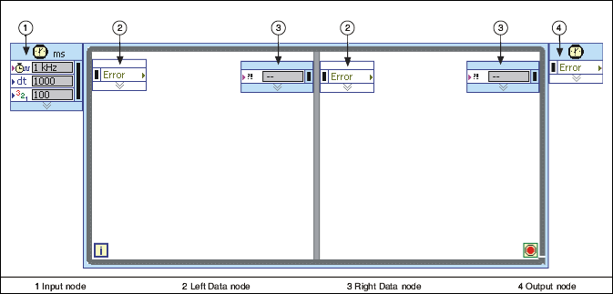
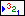
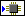

Timed Loop
Owning Palette: Timed Structures and VIs
Requires: Base Development System (Real-Time, Windows)
Executes one or more subdiagrams, or frames, sequentially each iteration of the loop at the period you specify. Use the Timed Loop when you want to develop VIs with multirate timing capabilities, precise timing, feedback on loop execution, timing characteristics that change dynamically, or several levels of execution priority. Right-click the structure border to add, delete, insert, and merge frames.

 Add to the block diagram Add to the block diagram |
 Find on the palette Find on the palette |
 | Note If you use the Timed Loop in an FPGA VI, you must use a single-cycle Timed Loop. A single-cycle Timed Loop executes one subdiagram per FPGA clock cycle. Single-cycle Timed Loops do not support frames. |
The iteration (i) terminal provides the current loop iteration count, which is zero for the first iteration. If iteration count exceeds 2,147,483,647, or 231-1, the iteration terminal remains at 2,147,483,647 for all further iterations. If you need to keep count of more than 2,147,483,647 iterations, you can use shift registers with a greater integer range.
The Timed Loop includes the (1) Input and (4) Output nodes, and (2) Left and (3) Right Data nodes for each frame, as shown in the previous illustration. By default, nodes of the Timed Loop do not display all of the available input and output terminals. You can resize nodes or right-click a node and use the shortcut menu to display node terminals. Right-click the border of a Timed Loop and select Show Left Data Node or Show Right Data Node from the shortcut menu to display each node.
Double-click the Input Node or right-click the structure and select Configure Timed Loop to display the Configure Timed Loop dialog box, where you can configure the Timed Loop. The values you enter in the Configure Timed Loop dialog box appear next to the input terminals on the Input Node.
The following table lists node terminals of the Timed Loop. The Timed Loop includes many nodes whose values are relative to the start of the timing source. If you do not request synchronization, the start time of the timing source is the start time of the first loop that uses the timing source. If multiple loops are part of a synchronization group, the start time of the timing source is when the last loop is ready to execute.
| Deadline | Specifies the time when the Timed Loop must complete the iteration. The deadline value is relative to the start of the timing source and is specified in units of the timing source. Specifying a value of -1 indicates no deadline. If you do not specify a value for this input, the structure uses the value of Period as the deadline value. | |||
| Error | Propagates errors through the structure. The Timed Loop does not execute if Error receives an error condition. | |||
| Mode | Specifies how the Timed Loop handles late executions. There are five available modes—No change, Process missed periods maintaining original phase, Process missed periods ignoring original phase, Discard missed periods maintaining original phase, and Discard missed periods ignoring original phase. | |||
| Structure Name | Specifies a name for the Timed Loop. | |||
| Offset | Specifies the length of time a Timed Loop waits to begin execution. The offset value is relative to the start of the timing source and is specified in units of the timing source. | |||
| Period | Specifies a period for the Timed Loop in the same units as the timing source specified by Source Name.
| |||
|  | Priority | Specifies the priority of the execution of the Timed Loop. The priority of a timed structure specifies when the structure executes on the block diagram relative to other objects on the block diagram. The value for the Priority input must be a positive integer between 1 and 65,535. | ||
|  | Processor | Specifies the processor you want to handle execution. The default is -2, which means LabVIEW automatically assigns a processor. To manually assign a processor, enter a number between 0 and 255, where 0 represents the first processor. If you enter a number that exceeds the number of available processors, you generate a run-time error and the timed structure does not execute. | ||
| Source Name | Specifies the name of the timing source to use for controlling the structure. The timing source must be created on the block diagram using the Create Timing Source VI or selected from the Configure Timed Loop dialog box. | |||
| Timeout | Specifies the maximum amount of time a Timed Loop can wait to begin execution. The default is -1,which means that no timeout is specified for the next frame. The timeout value is relative to the start of the timing source or the end of the previous iteration and is specified in units of the frame timing source. |
| Actual End [f-1] (Unavailable in singe-frame Timed Loop) | Returns the actual end time for the previous frame (f-1). The actual end value is relative to the start time of the timing source and is specified in units of the timing source. |
| Actual End [i-1] (First frame only) | Returns the actual end time for the previous iteration (i-1). The actual end value is relative to the start time of the timing source and is specified in units of the timing source. |
| Actual Start [f] (Unavailable in single-frame Timed Loop) | Returns the actual start time of the current frame (f). The actual start value is relative to the start time of the timing source and is specified in units of the frame timing source. |
| Actual Start [i] (First frame only) | Returns the actual start time of the current iteration (i). The actual start value is relative to the start time of the timing source and is specified in units of the timing source. |
| Deadline | Returns the deadline value for the current frame. |
| Error | Propagates errors through the structure. |
| Expected End [f-1] (Unavailable in single-frame Timed Loops) | Returns the expected end time for the previous frame (f-1). The expected end value is relative to the start time of the timing source and is specified in units of the timing source. The expected end (f-1) is equal to the start of the next period. |
| Expected End [i-1] (First frame only) | Returns the expected end time for the previous iteration (i-1). The expected end value is relative to the start time of the timing source and is specified in units of the timing source. |
| Expected Start [f] | Returns the expected start time of the current frame (f). The expected start value is relative to the start time of the timing source and is specified in units of the frame timing source. |
| Expected Start [i] (First frame only) | Returns the expected start time of the current iteration (i). The expected start value is relative to the start time of the timing source and is specified in units of the timing source. |
| Finished Late? [f-1] | Returns TRUE if the Timed Loop does not complete the previous frame before the specified deadline. |
| Finished Late? [i-1] (First frame only) | Returns TRUE if the Timed Loop does not complete the previous iteration before the specified deadline. |
| Frame Duration (Unavailable in single-frame Timed Loops | Returns the duration time of the previous frame. The frame duration is relative to the start of the frame and is specified in units of the frame timing source. |
| Global End Time | Returns the end time of the previous iteration or frame in nanoseconds. If the timed loop uses an absolute timing source, Global End Time returns a timestamp. Otherwise, Global End Time returns a 64-bit integer. If the timed loop runs on an RT target, Global End Time is based on the target�s system time and can be synchronized with an external clock. If the timed loop runs on Windows, Global End Time is based on the Windows system time. |
| Global Start Time | Returns the start time of the current iteration or frame in nanoseconds. If the timed loop uses an absolute timing source, Global Start Time returns a timestamp. Otherwise, Global Start Time returns a 64-bit integer. If the timed loop runs on an RT target, Global Start Time is based on the target�s system time and can be synchronized with an external clock. If the timed loop runs on Windows, Global Start Time is based on the Windows system time. |
| Iteration Duration (First frame only) | Returns a time stamp of the duration of the previous iteration. The iteration duration value is relative to the start of the iteration and is specified in units of the timing source. |
| Mode (First frame only) | Returns the mode value for the current iteration. |
| Offset (First frame only) | Returns the offset value for the start of the current iteration. |
| Period (First frame only) | Returns the period value for the current frame. |
| Priority | Returns the priority value for the current frame. |
| Processor | Returns the processor you assigned to handle execution, if you assigned one. Otherwise, returns -2, which means LabVIEW automatically assigned a processor. |
| Start (Unavailable in first frame) | Returns the start value for the current frame. |
| Timeout | Returns the timeout value for the current frame. |
| Wakeup Reason | Returns an enumerated type with the reason for the execution start of the current iteration. The possible values are 0 for Normal, 1 for Aborted, 2 for Asynchronous wakeup, 3 for a Timing source error, 4 for a Timed loop error, and 5 for Timeout. |
| Deadline | Specifies the time when the Timed Loop must complete the next frame. The deadline value is relative to the start of the next frame and is specified in units of the timing source. The default is -1, which means unchanged. | |||
| Error | Propagates errors or warnings out of the Timed Loop subdiagram. If Error receives an error condition, the Timed Loop executes the next frame untimed. If Error receives an error condition in the last frame, the structure finishes executing the current iteration untimed, exits the loop, and returns the error condition on the Output node. | |||
| Mode (Last frame only) | Specifies the Mode for the next iteration of the Timed Loop. There are five available modes—No change, Process missed periods maintaining original phase, Process missed periods ignoring original phase, Discard missed periods maintaining original phase, and Discard missed periods ignoring original phase. | |||
| Offset (Last frame only) | Specifies the length of time the next iteration waits to begin execution. The offset value is relative to the start of the next iteration and is specified in units of the timing source. The default is -1, which means unchanged. If you set an offset for the next iteration, you must set a new Mode value. | |||
| Period (Last frame only) | Specifies a period for the next iteration of a Timed Loop in units as the timing source. The default is -1, which means unchanged.
| |||
| Priority | Specifies the Priority for the next iteration of the Timed Loop. The priority specifies when the next iteration executes on the block diagram relative to other objects on the block diagram. The value for the Priority input must be a positive integer between 1 and 65,535. | |||
| Processor | Specifies the processor you want to handle execution. The default is -1, which means LabVIEW assigns the same processor specified in the Input node. Enter -2 to allow LabVIEW to assign the processor. To manually assign a processor, enter a number between 0 and 255, where 0 represents the first available processor. If you enter a number that exceeds the number of available processors, you generate a run-time error and the timed structure does not execute. | |||
| Start (Unavailable in last frame) | Specifies the length of time the next frame waits to start execution. The start value is relative to the beginning of the current frame and is specified in units of the timing source. | |||
| Timeout | Specifies the maximum amount of time the next iteration can wait to begin execution. The default is -1, which means that no timeout is specified for the next iteration. The timeout value is relative to the end of the previous iteration and is specified in units of the frame timing source. |
| Actual End [f-1] (Unavailable in single-frame Timed Loops) | Returns the actual end time for the previous frame (f-1). The actual end value is relative to the start time of the timing source and is specified in units of the timing source. |
| Actual End [i-1] | Returns the actual end time for the previous iteration (i-1). The actual end value is relative to the start time of the timing source and is specified in units of the timing source. |
| Error | Propagates errors received by the Timed Loop and returns errors from the subdiagram. |
| Expected End [f-1] (Unavailable in single-frame Timed Loops) | Returns the expected end time for the previous frame (f-1). The expected end value is relative to the timing source if the frame timing source is not reset at the beginning of the iterations. The expected end value is specified in units of the timing source. The expected end (f-1) is equal to the start of the next period. |
| Expected End [i-1] | Returns the expected end time for the previous iteration (i-1). The expected end value is relative to the timing source if the frame timing source is not reset at the beginning of the iterations. The expected end value is specified in units of the timing source. |
| Finished Late? [f-1] (Unavailable in single-frame Timed Loops) | Returns TRUE if the Timed Loop does not complete the previous frame before the specified deadline. |
| Finished Late? [i-1] | Returns TRUE if the Timed Loop does not complete the previous iteration before the specified deadline. |
| Frame Duration (Unavailable in single-frame Timed Loops) | Returns the duration time of the previous frame. The frame duration is relative to the start of the frame and is specified in units of the frame timing source. |
| Global End Time | Returns the end time of the previous iteration or frame in nanoseconds. If the timed loop uses an absolute timing source, Global End Time returns a timestamp. Otherwise, Global End Time returns a 64-bit integer. If the timed loop runs on an RT target, Global End Time is based on the target�s system time and can be synchronized with an external clock. If the timed loop runs on Windows, Global End Time is based on the Windows system time. |
| Iteration Duration | Returns a time stamp of the execution length of the previous iteration. The iteration duration is relative to the start of the iteration and is specified in units of the timing source. |
| Processor | Returns the processor you assigned to handle execution, if you assigned one. Otherwise, returns -2, which means LabVIEW automatically assigned a processor. |
Refer to the Configuring Timed Loops topic for more information about using and configuring the Timed Loop.
To convert a Timed Loop to a While Loop, right-click the Timed Loop and select Replace with While Loop from the shortcut menu. To convert a Timed Loop to a Timed Sequence structure, right-click the Timed Loop and select Replace with Timed Sequence from the shortcut menu.
Unlike the While Loop, the Timed Loop does not require wiring to the stop terminal. If you do not wire anything to the stop terminal, the loop will run interminably.
Refer to the Timed Loop (FPGA Module) topic for more information about using and configuring the Timed Loop in FPGA Vis.
Examples
Refer to the following VIs for examples of using the Timed Loop:
- Timed Loop Offset VI: labview\examples\Structures\Timed Loop
 Open example Find related examples
Open example Find related examples - Timed Loop Resettable Source Type VI: labview\examples\Structures\Timed Loop Open example Find related examples